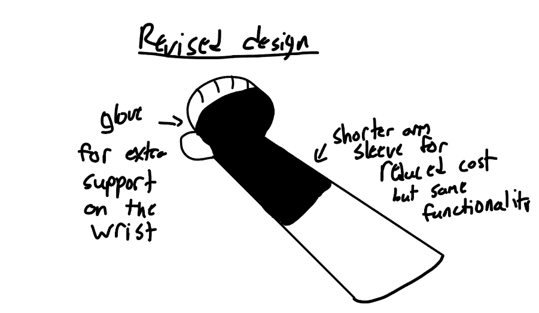

Problem Definition
According to studies recorded by the National Institute of Health over 30% of frequent writers, including students and professionals, report experiencing wrist discomfort or strain due to excessive pressure during extended handwriting sessions. This issue has been documented over the past decade and affects a significant number of individuals in academic and professional environments all around the world.
The main purpose of our project as stated previously is to help alleviate some wrist and joint pain in people who frequently write or type that encounter issues with wrist pain. While we don’t seek to completely get rid of this pain as that would require much more intricate designs we seek to improve the experience of writing and give comfort to our users.
Consumers: people who encounter situations of frequent writing in their profession which would cause them to have either pain or discomfort in their daily lives.
End users: professionals who encounter writing in their daily lives or typing such as teachers, editors, copywriting, writers, journalists, or even students.
Experts: this would be of interest to doctors or stores such as CVS/walgreens to help patients with this problem.
Concept Development

This concept is a simple design that allows for a simple implementation of our research and ideas into a shape that should make for a hopefully simple creation. With the material we intend to use being nylon we want to bring a comfortable design that allows users to be able to quickly use this in their daily lives and offer a way to aid in reducing wrist pain in writing or typing. The size of this would rudimentary be long enough to support some of the lower arm for joints present in this area as well as a piece of the hand to further reinforce the wrist. This would be ~9 inches in length to cover this area as well as offering an adjustable experience. For example, as a student when I am writing an essay for a class I have issues with not only areas in my wrist but the lower parts of my arm as some joints connect to this area. This design not only offers coverage for the wrist but also the lower parts of the arm and we hope to have adjustable straps on this piece to allow for further comfort and flexibility. This is a strong solution as it offers a simple design and hopefully a resolution to the issue we are pursuing.

This is a glove that fits around the wrist and is attached to the fingers to apply a certain amount of pressure to the wrist to keep it stable depending on the fingers movements. While digging on current solutions to wrist pain a lot of gloves ended up appearing and what I thought was a better and more ergonomic solution. The glove would work by fitting around the wrist and palm but instead of having the standard glove fit onto the fingers were going to have a smaller ring shaped bands around each finger connected to the glove by a string which when pulled would then tighten the side to make sure the wrist is getting the right amount of pressure applied to not be hurt. The reason this is a strong solution is because gloves are an easy way to maintain constant pressure on the wrist while also being aesthetic.

Concept Analysis
This is the presentation we used in order to ask more qualified professionals for pointers on our ideas. What we gathered is that both ideas are pretty solid however they should probably both combine to one design and lose some aspects. These apects include my design covering the whole arm and the other design having strings as this would limit movement. We will take this advice to heart and this will help us workshop our design further.
Solution Selection

For the decision matrix we took into account the main parts that would make our designs sound being: cost, aesthetics, durability, performance, etc. We took into careful consideration each aspect of the desings but overall came to a concensus that my design was slightly better as it allowed for more flexibility and durability. However, my design can still be improved upon as it can be more efficient than designed at first.
">This is the revised design of our piece that we came up together that draws aspects from both pieces and also improves in functionality and efficieny from both designs. We use the same material here as in previous iterations and also took into account the advise from the professionals that we were able to speak with.
Detailed Design

One of the main components that we can improve upon for this is specifically the aesthetics as this concept design is similar to a cast which are not totally pleasing to look at. Our measurements are very flexible as we want it to fit our users despite their varying sizes of forearms and wrists. Our aim is to cover around half the forearm area and keep the hand covered to provide optimal assistance to our users. We will continue to workshop the design as we continue the project however this provides us with a very solid baseline for our first prototype. Do keep in mind that this is only a simple CAD sketch as of right now and our first prototype will be built soon.
Cost Estimation
~$25 dollars for materials such as nylon which are apart of the entire sleeve and will offer the most comftorable experience for our users and also allow the sleeve to be flexible. ~$30 bucks if we pay $15 an hour which could vary depending on how we want our sleeve to be made. This could take more or less time which may cost more if we request a more professional work to be done. Taking into account these prices, the first prototype should cost around $55-60 especially if we request to have a higher end prototype for our designs.
Daily Updates #1
November 14, 2024
Today my group and I consulted certain experts on the field dealing with issues on the wrist and arm in general and asking for their input on our designs and if they could offer some criticism for us. One of these experts was a doctor that told us that our design was decently sound and offered us a pointer to some products that deal with similar problems that have seen some success within their patients. Some of these products are able to be found in popular medical stores such as CVS and are arms sleeves designed to offer support for the forearm and associated muscle/tendon groups. This is a good start for our design as we are provided a base to follow and from their we can branch out our design to also include the wrist.
November 16, 2024

Today our group researched into the CVS wrist braces we were recommended and found one brace that fulfilled a good amount of our requirements. The problem we found with this brace is that it was not only somewhat heavy on the arm but it felt restrictive to our arms movement. With this design in mind we want to create a design that is comftorable for our users and provides adequate support like this brace did.
November 17, 2024
Our group found an amazing prodcut today that fits almost all of the criteria we wanted to include in our arm and wirst sleeve which was the nike dri-fit technology. This line of products is comftorable for the user and even when the user sweats it keeps mostly dry which provides a very comfortable experience that we hope to bring to our users. In our research we found that the main materials used in this sleeve were polyster and spandex we will consider these materials for our prototype. One problem we found is that it is a little loose which means it provides minimal support which we at least want a moderate amount of support for the areas we want to cover.
November 20, 2024

Our group decided that we would buy the arm sleeve from nike in order to test how it feels and the support it offers. This would offer us insight on how we wish to continue to construct our prototype and may give us a new baseline in terms of materials. When we wore it we noticed that it was a bit lacking in support as it was not really tight enough to offer said support. However, the big takeaways we got from this was the fact that the design is pleasing, it feels comftorable to wear, and it is easy to remove and put on. Our group wants to pursue this model and hopefully replicate the dri-fit technology as well as the various benefits mentioned beforehand for this prototype while also working on a way to fix the minimal support for the wrist that this product lacks.
November 21, 2024
Today we workshopped a solution for the lack of wrist support as we struggled to think of a way that would include the "glove" component of our design concept. While we were talking with each other and some people who were more educated on the subject of braces we came up with the idea to cut and sew a piece of the sleeve to mimic the hand allowing for a seamless glove that would hopefully solve our issue of a lack of wrist support. This would also solve a couple of issues that we previously had with the sleeve such as the length of the piece.
Preliminary Design Review
I. Introduction
A. Executive Summary: Provide a concise overview (1-2 paragraphs) of your project, key design decisions, major findings, current status, challenges, and next steps.
Our project has gone through multiple different phases of design and development through our decisions and findings. One of the major decisions we had made was to combine major components of our original sketches and take the best parts of both while removing unnecessary elements. One of the major findings we found during our research was the dri-fit technology developed by Nike that is used in a lot of their clothing lines and most importantly their arm sleeves. We decided to align our designs with this product line of arm sleeves to include the ease of use, comfortability, and flexibility this product provides. However, we wish to make major improvements to this design as the arm sleeve does not provide much support to the wrist as it is now. The current status of our project is in prototype design and execution as our first prototype is almost completed. One of the major challenges we are facing right now is finding a way to include more support in general for the arm and wrist areas as the sleeve we currently have does not provide the support we want in each of these areas. Our next steps are to finalize our prototype and get multiple opinions of how the sleeve feels and any further improvements we can make to our project.
B. Project Overview: Briefly describe your project's purpose, goals, and scope.
Our project’s main goal is to help alleviate stress and pain in the wrist and arm area by providing a sleeve that is comfortable to users, easy to use, and flexible. Our current scope is to provide a product that is useful mostly for students as students have to do a good amount of writing and typing on a daily basis and in my personal experience leads to irritation and pain in the wrist and arm. We aim to help students as well as some professionals who have to deal with a lot of writing or typing on a daily basis.
C. Team Introduction: List team members and their roles/responsibilities.
Noah Quintana: Lead researcher and project manager. Christopher Garcia: Lead designer
II. Project Management Overview
A. Project Lifecycle Stage: Identify where your project stands in the engineering lifecycle (e.g., transitioning from conceptual to detailed design).
Currently we are transitioning from our detailed design to our first prototype production. As of right now the prototype is almost completed and we should be able to begin testing it very soon.
B. Timeline and Milestones: Present a schedule of major project phases and deadlines.
Mid December (10-17): first prototype completed and testing begins shortly after. Late December (20-30): gather feedback from our first prototype from multiple people and see how we can improve our design any further. January: complete a second prototype including the feedback we gathered which will hopefully resolve most of the problems we had with our first prototype. Shortly after this is finished we will similarly test our prototype again and gather feedback where applicable. February: complete either a third prototype or final product depending on how many issues our second prototype brings up. As of now we will assume this will be our final product or at least very close to it. March: test our final product/prototype and gather any final feedback in order to refine our product and make sure it provides satisfactory results from our users. April: final product should be completed along with any final pieces of feedback gathered from our users.
C. Resource Allocation: Outline how team members, time, and other resources are being utilized.
Noah: time is mainly utilized to help improve designs and document processes of the project and provides constructive feedback on the current stage of our project. Mainly uses feedback from others as well as personal experience in order to create a more detailed and effective design for our project. Christopher: time is mainly utilized in creating the physical product and designing the needs and wants of our designs into a physical form. He also uses some budget in order to see how different products such as arm sleeves work in order to make a better product.
III. Requirements Analysis
A. Customer/Stakeholder Requirements: List the needs and expectations of your project's end-users or stakeholders.
Needs: our product should at the bare minimum provide support for the wrist and arm and should be able to be flexible in order to perform the task of writing and typing. The user should be able to notice a difference between wearing the product and not in a positive manner. Expectations: our user should expect to be comfortable while wearing our product and they should be able to wear our product for an extended period of time without feeling uncomfortable.
B. Functional Requirements: Describe what your design must do to meet stakeholder needs.
Our design must give support to the arm and wrist in a way that nullifies strain/stress in the area and provide a noticeable difference to when the user is not wearing the product. If this requirement is not met then our product would be considered to have failed.
C. Non-functional Requirements: Specify performance, reliability, safety, and other quality attributes.
Our non-functional requirements include the extended use of our product, for example if it is being used for 4+ hours and the user begins to feel uncomfortable with our product, we hope to make our product as comfortable as possible for our user's experience but it is not as important as some of our other requirements. We also hope to make this product aesthetically pleasing in order to make our users feel better when using our product.
D. Constraints and Limitations: Identify any restrictions on your design (e.g., budget, materials, time).
We are mainly constrained by time as we have due dates to comply with as well as other classes and exams that require our time to complete and perform well in. This limits the amount of time we are able to dedicate to the production of our product and slows down the speed we are able to produce designs, prototypes, or products.
IV. Conceptual Design
A. Design Alternatives: Summarize the different design concepts you considered.
Our two main designs can be described as an arm sleeve and a sort of wrist sleeve respectively. While both designs introduced a solution to one problem they failed to solve both in an effective manner. These were our main two concepts that would eventually lead to our primary design choice.
B. Evaluation Criteria: Explain how you assessed each alternative.
We assessed the effectiveness of each of these designs through the use of a decision matrix as well as consulting with experts on which design seemed more effective. In the end we decided that the first design was more effective but it still lacked the support in the wrist. At this point we had decided to cut off the unnecessary lower parts of the sleeve in the first design and move those parts to the top to make a sort of glove that would help support the wrist as well as the arm.
C. Selected Design Concept: Present your chosen design and why it was selected.
This design was selected as it provided the most efficient and effective design for the solution to our problem as it cut off unnecessary parts of the first design and added some components of the second design. This would allow for optimal wrist and arm support for our users.
D. Justification: Provide reasoning for your design choice, referencing your evaluation criteria.
This was chosen as the final and revised design as it offered a compromise between both designs that removed the weaknesses of each. The reason we had done this is because both designs were sound but both lacked a key component to make them a solution to our problem. This design provides an efficient solution to our problem and when presented to experts they believed that the design was sound. This design is what we will use as a basis to create our first prototype and we will revise it as needed or as feedback is given.
V. Preliminary Design Details
System Architecture: It's a sleeve that goes from your wrist to the end of your forearm along with a glove wrapped around the palm.
Major Components and Subsystems
- Glove: Wraps around your palm for support to make sure the sleeve doesn't fall off, would also be able to keep hidden as extra comfort inside the sleeve.
- Sleeve: The main part of the entire design that provides support for the wrist as well as comfort.
C. The two main components are connected to each other and the glove has the ability to go inside the sleeve to add cushioning.
D. Performance Specifications: Our product is expected to provide less strain to the wrist and arm area and allow our users to be comfortable while using it. This will be mainly up to the user when our prototype is tested and if their specifications are not met we will need to majorly re-evaluate the design.
VI. Engineering Analyses
A. Relevant Calculations: Mathematical calculations pending
B. Risk Assessment: No real risks associated with our product, it may cause irritation to some due to the material choices.
VII. Prototype or Proof of Concept
A. Prototype Development Status: We currently have the sleeve, but at the moment are trying to figure out how to make it tight around the wrist and add the glove component.
B. Initial Test Results: We have yet to finish our prototype so we don’t have any results yet.
C. Lessons Learned: No results yet.
VIII. Project Plan Moving Forward
A. Next Steps: Finish the prototype, test the prototype, Find any changes needed to make it work, Finish the final design.
B. Updated Timeline: December-January the first prototype is finished, February-March we have tested and made multiple prototype designs, March-April the final design has been finished.
C. Resource Needs: Nylon, polyester, Spandex
IX. Budget and Cost Estimates
A. Current Spending: $20 on a sleeve
B. Projected Costs: ~$50-$60
C. Budget Constraints: The first prototype will cost more as it's using already made products, but later prototypes will most likely cost less as materials decrease.
X. Compliance and Standards
A. Applicable Regulations: List any laws or regulations your design must adhere to.
FDA: Falls Under Class I medical devices
FTC: Regulates advertising and all claims made about the product must be factual.
B. Industry Standards: Identify relevant technical standards you're following.
ISO 14971, ICE 62304, ISO 10993, and ISO 20417
C. Safety Considerations
Our product is built using materials that are comfortable and cause nor harm to the user. No real harm can be caused by our product to anyone unless very intentional as our product is built with consideration for safety.
XI. Open Issues and Challenges
A. Technical Challenges: Right now the sleeve is too loose around the wrist area which must be tightened.
B. Unresolved Design Decisions: We currently don’t have any new design decisions to make.
C. Potential Roadblocks: Messing up on sewing could cause our prototype or future products to be delayed as this is a pivotal part of our design. If the sewing is incorrect it could lead to multiple issues with our sleeve and may need us to restart our prototype process.
XII. Conclusion
A. Summary: Recap the key points from your PDR.
As of right now our product is currently in production of its first prototype and we need to find a way to tighten the area around the wrist as well as add a glove so we can provide proper support to each area. Our designs are complete and as of right now we expect no significant changes to them. We want to provide a comfortable experience for our users and provide a glove that is flexible to suit the needs of our users. We have spent $20 currently and in total are expecting to spend ~$50 for our future prototypes. We expect some criticism and advice after our first prototype is created and our final product should be finished around April.
B. Request for Feedback: Ask for input on specific aspects of your design.
Our design has previously been reviewed and we have not received negative feedback as of yet. We are expecting to receive more feedback when our first prototype is properly finished.
C. Next Review Milestone: State when the next major review will occur and what you aim to accomplish by then.
Our next major review should occur very soon when our first prototype is finished which should be in the coming weeks. Once that is done we will review any potential problems our product may incur and ask for feedback for our design as well as our prototype.